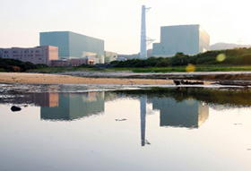
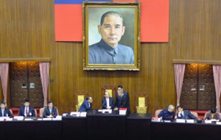
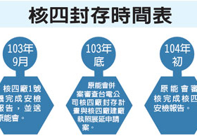

|  |
停建核四外，我們更應該做什麼？約45年前，在筆者還是高中生的年代，修自然組理工科的中學生，化學課本內都會有一章「核化學」，說明原子核的構造與核反應的原理，以及核能發電的基本知識。筆者也曾經擔任國立編譯館高中化學教科書審查委員會的主席多年，在審查的過程當中，發現這一部分的科學知識，基本上，已不再被列入課程大綱中了。 |
總統：核四停工不停建留選擇權（中央社記者黃名璽台北12日電）總統馬英九今天說，政府決定核四停工不停建，是為子孫保留一個選擇權，讓大家萬一面對限電或電費高漲時能有一個選擇。 |
|
|  |
綠核四停建案遭否決 4藍委跑票將挨罰立法院今(9)日召開院會，但因週二的程序委員會朝野無共識，全交由院會處理，因此立法院上午上演表決大戰，民進黨及台聯黨皆提案要求行政院長江宜樺赴立院就核四停建進行專案報告，並決議核四停建，但在國民黨的優勢人數下全被封殺。不過，國民黨立委李慶華、丁守中、羅明才、羅淑蕾等人都分別倒戈支持在野黨的核四相關提案，將面臨罰款處分。 |
|  |
張家祝：核四封存時日 現在講太早行政院下令核四廠封存後，外界持續關切封存的費用與時間。外傳明年4月1日啟動封存計畫，經長張家祝澄清表示，要等封存計畫確定以後，根據計畫研擬、需要多少時間、前期準備要多少時間，現在講還太早。 |
廢核團體：停建核四 降公投門檻呼應700位公民日前提出的「核四公民意見書」，全國廢核平台今(29)日下午針對《公投法》修法提出5大訴求。中原大學財經法律系副教授徐偉群表示，終極目標是「無門檻」，但若擔心濫用公投，提案門檻可改成象徵性的50人，連署成案門檻可改為投票權人數的千分之一（約1萬8000人），效力門檻為有投票權人數的百分之一（約18萬人）。 |